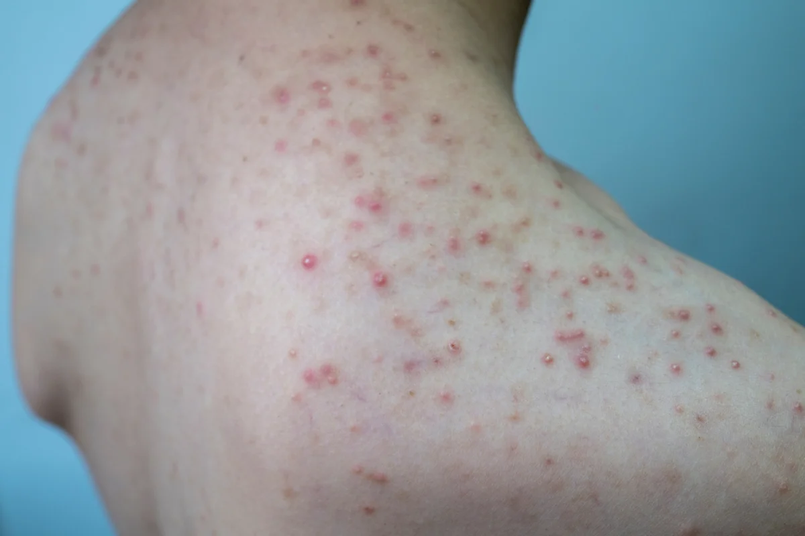
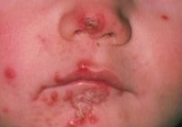
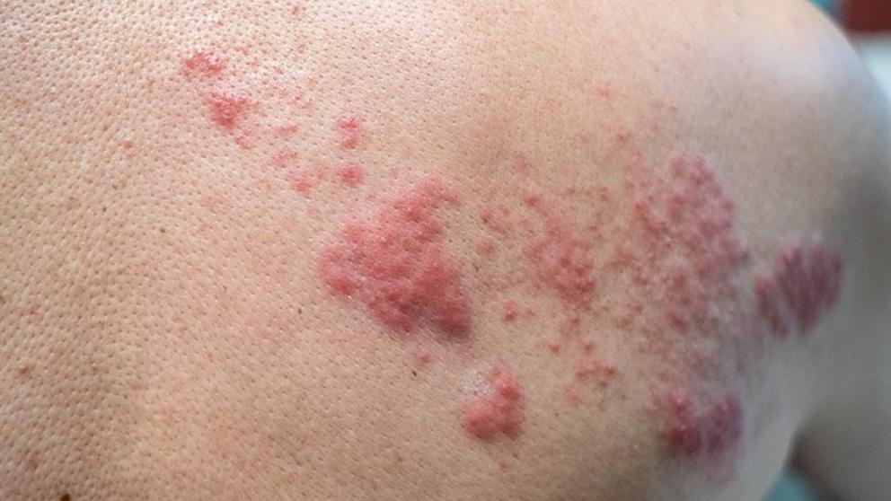
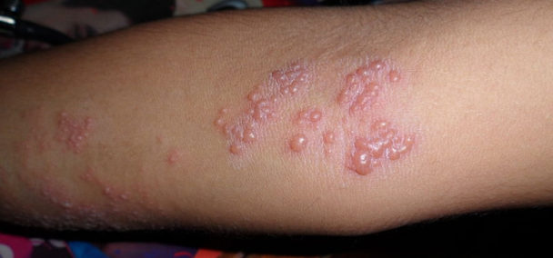
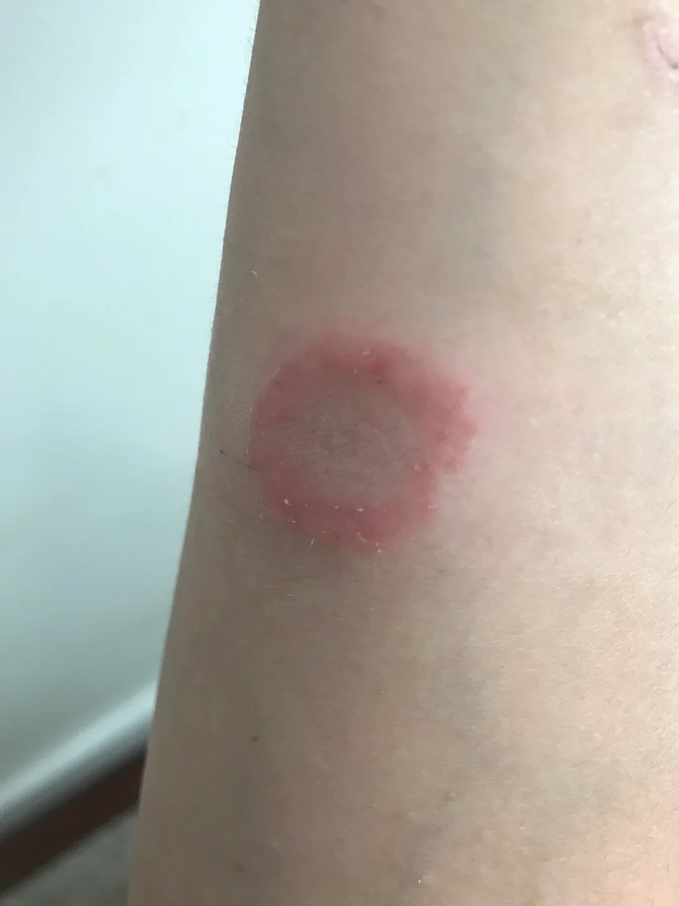
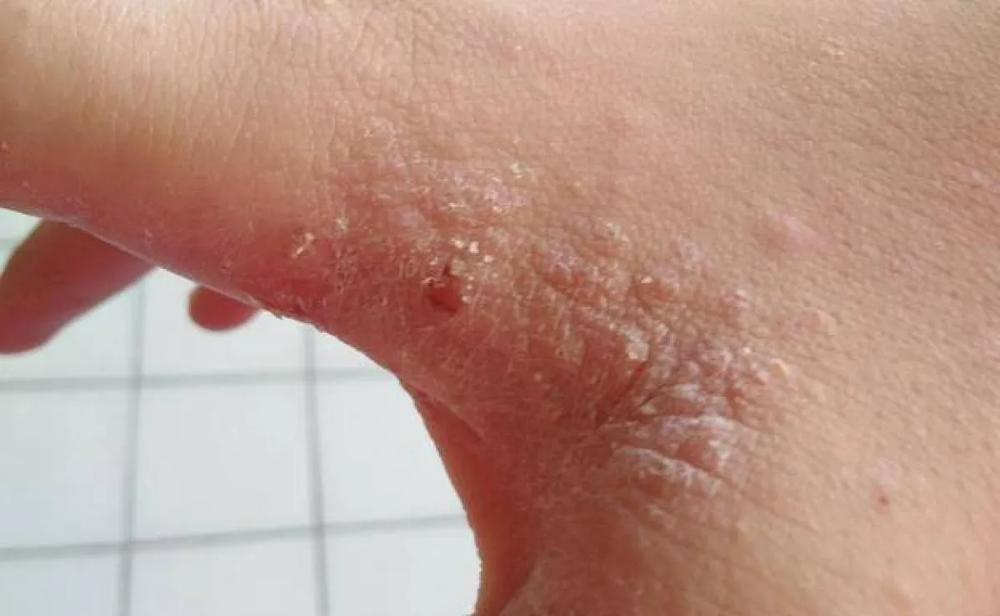
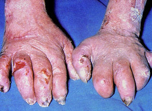
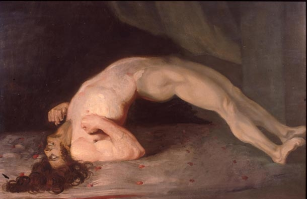
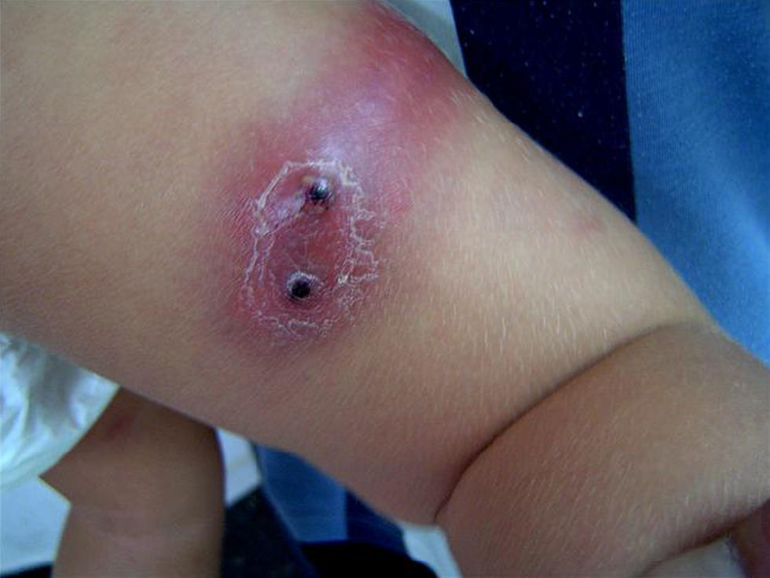

Principales patologías dermatológicas infecciosas
Sintomatología común
Urticaria
Uno de los síntomas más comunes en las patologías dermatologícas se conoce como la urticaria conocida como la presencia de placas eritematosas delimitadas y prurigosas repartidas por la piel. Esta reacción puede encontrarse mediada de forma inmunitaria y no inmunitaria y podemos clasificarlas como crónica (mayor a 6 semanas) y aguda (menor a 6 semanas).
Prurito
Se conoce como una sensación subjetiva desagradable de picazón mediados por las neuronas sensitivas periféricas. Esta sensación se encuentra mediada a su vez por la histamina y principalmente conocemos 3 procesos, a saber:
- Dermatológico: Procesos inflamatorios.
- Sistémico: Relacionado con enfermedades de órganos.
- Neurogénicos: Relacionado con enfermedades del sistema nervioso central.
En cuanto a su tratamiento, éste debe enfocarse en el cuidado de la piel, el tratamiento tópico y, si fuese necesario, el tratamiento sistémico.
| Tipo de enfoque | Tratamiento |
|---|---|
| Cuidados de piel | Agua fría / tíbia y uso de jabón. Evitar agentes irritantes |
| Tratamiento tópico | Cremas con alcanfor, mentol, pramoxina, capsaicina o corticoides |
| Tratamiento sistémico | Generalmente antihistamínicos. El uso de antihistaminicos no sedantes (loratidina) pueden ser útiles en tratamiento diurno. A su vez, podemos encontrar el naltrexona (prurito biliar) y gabapentina (prurito urémico) |
Dermatosis infecciosas
Se conoce a la foliculitis como a una infección de los folículos pilosos. Su etilogía puede ser bacteriana, vírica o micótica y es conocido como la fricción, el sudor y la fricción pueden potenciar la patología.
Signos / síntomas
Por lo general, existe un dolor leve, prurito e irritación en la zona. A su vez, pueden desarrollarse pústulas superficiales. El diagnóstico se realiza de forma clínica

Corrección y/o tratamiento
Por lo general, se recomiendo un tratamiento higiénico acompañado de antibiotocios tópicos. La mupirocina o clindamicina tópica son altamente eficaces. Si la afección es extensa, se debe valorar el tratamiento sistémico.
Se conoce al impétigo como a una infección bacteriana de la piel producida por estreptococos o estafilococos. La infección por impétigo puede ocurrir tras la colonización de una herida abierta por estas bacterias.

Signos / síntomas
Por lo general encontramos tres presentaciones, a saber:
- No ampollar: Se tratan de vesículas o pústulas dispuestas en racimos que se rompen y desarrollan exudado.
- Ampollar: Similar a la no ampollar pero desarrollando ampollas en vez de vesículas.
- Ectima: Se caracteriza por la presencia de úlceras pequeñas, purulentas con costras gruesas de como amarronado con un halo eritematoso.
El diagnóstico se realiza de forma clínica, precisando toma de muestra cuando la persona NO responde al tratamiento.
En caso de impétigo resistente se debe recoger muestra nasal por ser un potencial reservorio.
Corrección y/o tratamiento
Se recomienda un tratamiento higiénico combinado con el uso de antibioticos tópicos (mupirocina 3 veces al día / 7 días). En pacientes inmunodeprimidos puede ser necesario el uso de antibióticos sistémicos.
La patología del herpes zoster ocurre tras la reactivación del virus de la varicela (virus herpes humano tipo 3). Por lo general, esta patología se observa en el adulto mayor y en persona imunodeprimidas.
Signos / síntomas
Por lo general, se observa un dolor lancinante seguido de la aparición de un exantema con vesículas con una base eritematosa; todo ello en una área que coincide con dermatomas (por ello se conoce como “la culebrilla”).
El diagnóstico se realiza de forma clínica. Si se tiene dudas puede hacerse uso de la prueba de Tzanck (aunque es sensible tanto para el herpes zoster como para el herpes simple). Finalmente, se puede llegar a hacer uso de la PCR para detectar el material genético del virus.

Un pequeño porcentaje de personas desarrollan una neuralgia postherpética que pueden llegar a durar más de 3 meses tras el brote pudiendo llegar a ser incapacitante.
Corrección y/o tratamiento
El tratamiento debe iniciarse inmediatamente tras el diagnóstico (disminuyendo su efectiva transcurridas mas de 72 horas tras el inicio). Se deben de hacer uso de antivirales (aciclovir, famciclovir…) de forma tópica para personas sanas y mediante vía oral o incluso intravenosa en paciente adultos mayores y/o inmunodeprimidos.
Aquellas personas mayores de 50 años y/o inmunodeprimidas se recomienda la vacunación mediante agente recombinante contra el herpes zoster.
La patología del herpes simple esta producido por 2 de los 8 herpesvirus que afectan a los seres humanos. (HSV-1, HSV-2). Generalmente, la infección por herpes simple producida por HSV-1 suele aparecer en la zona labial mientras que la infección por HSV-2 suele aparecer en la zona genital.
Signos / síntomas
El contagio se produce por contacto estrecho con una persona con enfermedad activa. Tras una infección inicial, el virus permanece en los ganglios linfáticos de por vida, pudiendo reactivarse la infección en un futuro.
Por lo general, se produce una sensación de prurito u hormigueo antes de la aparición de un pequeño grupo de vesículas. Las vesicular terminan por romperse, expulsar el exudado y secarse en forma de costra amarillenta.
Las personas inmunodeprimidas tiene mayor probabilidad de padecer una infección en el sistema nervioso central.

El diagnóstico se realiza de forma clínica. Se puede hacer uso de la prueba de Tzanck así como pruebas de PCR para detectar el material genético del virus.
Corrección y/o tratamiento
Por lo general, se hace uso de antivirales tópicos como son aciclovir, valaciclovir o famciclovir. La aplicación debe realizarse 5 veces cada / 24 horas (aproximadamente cada 4 horas).
La patología se conoce como una infección micótica.
Singos / síntomas
Se caracteriza por la aparición de parches en forma de O de color rojo / rosado con bordes desescamados y/o sobrelevados. Puede aparecer hiperpigmentación tras la infección.
El diagnóstico se realiza de forma clínica y con raspado de la piel valorando con un preparado húmedo de hidroxido de potasio.

Corrección y/o tratamiento
Por lo general, se recomienda medidas higiénicas con antimicóticos tópicos (Ketonazol, imidazol, ciclopirox). Los tratamientos puede prolongarse en el tipo (2 aplicaciones cada 24 horas durante 4 semanas) manteniéndose durante 7 a 10 días tras la resolución del cuadro. Las lesiones extensas o resistentes pueden ser candidatas al uso de terapias sistémicas como el itraconazol 200mg/24 horas o terbinafrina 250 mg/24 horas durante 2/3 semanas
La sarna (escabiosis) se conoce como la infección de la piel causada por el ácaro Sarcope scabiei var. hominis. Se trata de un parásito obligado que vive en túneles excarva en el estrato córneo de la epidermis.
Signos / síntomas
El principal síntoma clásico en el prutiro intenso que padece la persona que empeora por la noche. Encontramos distintos tipos de presentaciones:
- Clásica: Pápulas eritematosas que comienzan en los pliegues y espacioes interdigitales para diseminarse por todo el cuerpo.
- Costrosa: Debido a la respuesta inapropiada del cuerpo se produce una proliferación masiva de los ácaros presentando la persona parches eritematosos descamativas.
- Escabiosis nodular: Más frecuente en lactantes y niños. Se presenta como nódulos eritematosos que afectan a los pliegues, axilas, ingle y genitales.
- Escamada: Encontramos un eccema que generalmente se asocia con aquellas personas que también toman corticoides tópicos.
El diagnóstico es clínico pudiendo confirmase tras visualización de los ácaros bajo microscopio (obtenido mediante raspado tras el uso de glicerol o aceite mineral). Finalmente, la exploración de la piel puede ser ampliada haciendo uso de un dermatoscopio.

Corrección y/o tratamiento
El tratamiento cursa por el uso de la permitrina tópica. Se debe aplicar el tratamiento en todo el cuerpo y dejar actuar entre 8 a 14 horas. Las lesiones demoran hasta 3 semanas en resolverse (siendo dificil valorar el fracaso del tratamiento). Si existen resistencias al tratamiento puede hacerse uso de ivermectina vía oral. Finalmente, el prurito puede resolverse haciendo uso de corticoides tópicos o antihistaminicos vía oral.
El azufre precipitado al 6% o a 10% en vaselina se reserva como terapia alternativa para lactantes menor a 2 meses o a personas embarazas.
Dermatosis secundarias a enfermedades sistémicas
Más conocida como lepra, es una enfermedad infecciosa crónica producida por Mycobacterium leprae. La enfermedad se caracteriza por la afectación de la piel y de los nervios periféricos. Su transmisión se produce por contacto estrecho y prolongado con una persona infectada. La lepra puede ser clasificada en función del número de lesiones cutáneas:
- Paucibacilar: Menos de 5 lesiones cutáneas sin bacteria en las muestras de piel.
- Multibacilar: Más de 5 lesiones cutáneas con bacteria en las muestras de piel.
A su vez, podemos clasificar la enfermedad en función de la respuesta inmunitaria del paciente:
- Tuberculoide: Respuesta inmunitaria fuerte. Presenta pocas lesiones cutáneas y escasa afectación de nervios periféricos.
- Lepromatosa: Respuesta inmunitaria débil. Presenta múltiples lesiones cutáneas y afectación de nervios periféricos.
- Limítrofe: Respuesta inmunitaria intermedia. Presenta lesiones cutáneas y afectación de nervios periféricos de forma variable.

Signos / síntomas
La manifestación clínica de la enfermedad de Hansen puede variar dependiendo del tipo de lepra. Los síntomas más comunes incluyen:
- Lesiones cutáneas: Pueden ser manchas, nódulos o placas en la piel. Estas lesiones pueden ser hipopigmentadas (más claras que la piel circundante) o eritematosas (enrojecidas).
- Pérdida de sensibilidad: Las lesiones cutáneas pueden estar asociadas con pérdida de sensibilidad al tacto, al dolor o a la temperatura debido a la afectación de los nervios periféricos.
- Engrosamiento de nervios periféricos: Los nervios afectados pueden volverse engrosados y palpables, lo que puede llevar a debilidad muscular y deformidades en las manos, pies y cara.
El diagnóstico de la enfermedad de Hansen se realiza mediante una combinación de examen clínico, pruebas de laboratorio y estudios histopatológicos así como serología con búsqueda de anticuerpo IgM contra Mycobacterium leprae. La biopsia de piel y la tinción de Ziehl-Neelsen pueden ayudar a identificar la presencia de Mycobacterium leprae en las lesiones cutáneas.
Corrección y/o tratamiento
El tratamiento de la enfermedad de Hansen se basa en la terapia multidroga (TMD) recomendada por la Organización Mundial de la Salud (OMS). La TMD generalmente incluye una combinación de antibióticos como rifampicina, clofazimina y dapsona. La duración del tratamiento varía según el tipo de lepra y puede durar entre 6 meses y 2 años.
La enfermedad del tétanos es una infección bacteriana causada por Clostridium tetani. La bacteria produce una toxina que afecta el sistema nervioso, provocando contracciones musculares dolorosas y rigidez. La infección generalmente ocurre a través de heridas contaminadas con esporas de la bacteria.

Signos / síntomas
los síntomas del tétanos pueden incluir rigidez muscular, espasmos musculares, dificultad para tragar, fiebre y sudoración. Los espasmos musculares pueden ser graves y afectar la respiración, lo que puede poner en peligro la vida del paciente.
El diagnóstico del tétanos se basa principalmente en la evaluación clínica de los síntomas y antecedentes de exposición a heridas contaminadas. No existen pruebas de laboratorio específicas para confirmar el diagnóstico, pero se pueden realizar análisis para descartar otras condiciones.
Corrección y/o tratamiento
El tratamiento del tétanos generalmente incluye la administración de inmunoglobulina antitetánica para neutralizar la toxina, antibióticos para combatir la infección bacteriana y medidas de soporte para controlar los espasmos musculares y mantener la función respiratoria. La vacunación es la medida preventiva más efectiva contra el tétanos, y se recomienda mantener al día el esquema de vacunación.
El Staphylococcus aureus resistente a meticilina (SARM) es una cepa de la bacteria Staphylococcus aureus que ha desarrollado resistencia a varios antibióticos, incluyendo la meticilina y otros antibióticos beta-lactámicos. Esta resistencia hace que las infecciones causadas por SARM sean más difíciles de tratar y controlar.

Signos / síntomas
Los síntomas de una infección por SARM pueden variar según la ubicación y la gravedad de la infección. Algunas infecciones pueden ser leves, como abscesos cutáneos o forúnculos, mientras que otras pueden ser graves, como infecciones del torrente sanguíneo, neumonía o infecciones en heridas quirúrgicas.
El diagnóstico de una infección por SARM se realiza mediante pruebas de laboratorio, como cultivos bacterianos y pruebas de sensibilidad a los antibióticos. Estas pruebas permiten identificar la presencia de SARM y determinar qué antibióticos son efectivos para tratar la infección.
Corrección y/o tratamiento
El tratamiento de las infecciones por SARM puede incluir el uso de antibióticos específicos a los que la cepa sea sensible, como vancomicina, linezolid o daptomicina. En algunos casos, puede ser necesario drenar abscesos o realizar procedimientos quirúrgicos para eliminar la infección. La prevención de la propagación de SARM incluye medidas de higiene, control de infecciones en entornos de atención médica y el uso adecuado de antibióticos.
El término “negativización” se refiere al proceso mediante el cual una persona que ha sido portadora de SARM deja de tener la bacteria detectable en su cuerpo. Para que una persona sea considerada negativizada, se requiere que se realicen pruebas de seguimiento que confirmen la ausencia de SARM en muestras de piel, mucosas u otras áreas del cuerpo donde la bacteria podría estar presente.